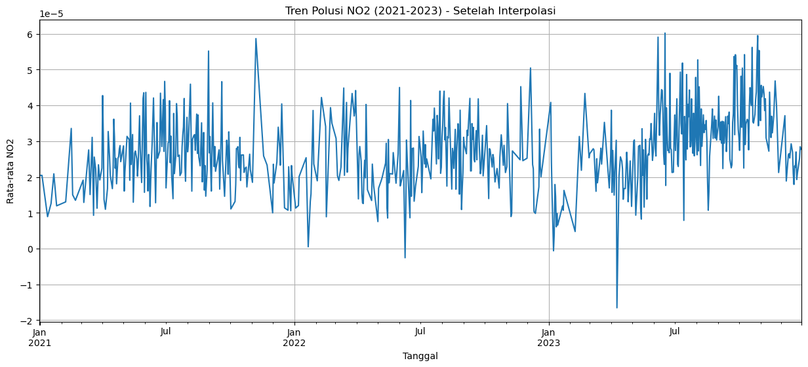
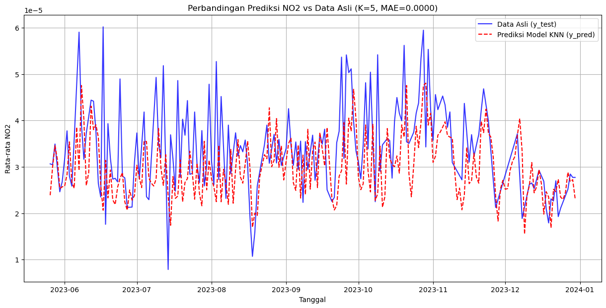
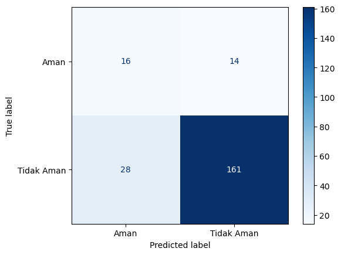

prediksi NO2#
🛰️ Penjelasan Kode: Mengecek Atribut Metadata Koleksi Sentinel-5P#
Kode berikut digunakan untuk mengeksplorasi atribut dan method dari objek CollectionMetadata yang diambil dari sebuah koleksi data satelit (contohnya SENTINEL_5P_L2).
Tujuannya adalah untuk melihat struktur internal objek metadata — agar kita tahu properti apa saja yang bisa digunakan dalam analisis.
🔍 Tujuan Utama#
Mengambil metadata lengkap dari koleksi tertentu (
SENTINEL_5P_L2).Menampilkan semua atribut dan method dalam objek metadata.
Membantu memahami isi dan struktur data sebelum digunakan lebih lanjut.
💻 Penjelasan Baris per Baris#
# Kita akan pakai print(dir(...)) untuk melihat semua
# atribut yang dimiliki objek 'full_meta'.
# Kita akan pakai print(dir(...)) untuk melihat semua
# atribut yang dimiliki objek 'full_meta'.
# ID Koleksi yang kita temukan
collection_id_terpilih = "SENTINEL_5P_L2"
print(f"Menginspeksi objek 'CollectionMetadata' untuk: {collection_id_terpilih}")
print("Mencari semua atribut dan method yang tersedia...")
print("--------------------------------------------------")
try:
# (Pastikan variabel 'connection' Anda masih aktif)
# Ambil metadata lengkap (ini adalah objek 'CollectionMetadata')
full_meta = connection.collection_metadata(collection_id_terpilih)
print("Berhasil mengambil objek 'full_meta'.")
print("Mencetak semua atribut yang tersedia (menggunakan dir()):\n")
# Perintah KUNCI: Tampilkan semua yang ada di dalam objek 'full_meta'
print(dir(full_meta))
print("\n--------------------------------------------------")
print("Selesai.")
except Exception as e:
print(f"\n--- GAGAL ---")
print(f"Gagal saat mencoba mengambil metadata: {e}")
Menginspeksi objek 'CollectionMetadata' untuk: SENTINEL_5P_L2
Mencari semua atribut dan method yang tersedia...
--------------------------------------------------
--- GAGAL ---
Gagal saat mencoba mengambil metadata: name 'connection' is not defined
🛰️ Penjelasan Kode: Mengambil Daftar Band dari Metadata Sentinel-5P#
Kode berikut digunakan untuk mengambil dan menampilkan daftar nama band (band_names) dari metadata koleksi SENTINEL_5P_L2.
Band (atau kanal spektral) adalah variabel-variabel pengamatan satelit, seperti NO₂, O₃, CO, CH₄, dan lain-lain.
🔍 Tujuan Utama#
Mengakses atribut
band_namesdari objek metadata koleksi.Menampilkan semua nama band yang tersedia secara rapi.
Jika atribut
band_namestidak ditemukan, mencoba alternatif atributbands.Menyiapkan data awal untuk memilih band tertentu (misalnya band NO₂).
💻 Penjelasan Baris per Baris#
# Berdasarkan output 'dir()', kita menemukan atribut 'band_names'.
# Mari kita panggil atribut itu.
# Berdasarkan output 'dir()', kita menemukan atribut 'band_names'.
# Mari kita panggil atribut itu.
# ID Koleksi yang kita temukan
collection_id_terpilih = "SENTINEL_5P_L2"
print(f"Mengambil 'band_names' dari metadata: {collection_id_terpilih}")
print("--------------------------------------------------")
try:
# (Pastikan variabel 'connection' Anda masih aktif)
# Ambil metadata lengkap (ini adalah objek 'CollectionMetadata')
full_meta = connection.collection_metadata(collection_id_terpilih)
print("Berhasil mengambil objek 'full_meta'.")
# KUNCI UTAMA: Coba akses atribut .band_names
if hasattr(full_meta, 'band_names'):
print("\n--- DITEMUKAN atribut 'band_names' ---")
nama_band = full_meta.band_names
if not nama_band:
print("Atribut 'band_names' ada tapi KOSONG.")
else:
print("Daftar semua nama band:")
# Cetak satu per satu agar rapi
for nama in nama_band:
print(f" - {nama}")
else:
print("Aneh, 'band_names' ada di 'dir()' tapi tidak 'hasattr()'.")
# JAGA-JAGA: Coba juga .bands
if hasattr(full_meta, 'bands'):
print("\n--- DITEMUKAN atribut 'bands' ---")
info_bands = full_meta.bands
print("Isi dari 'bands':")
print(info_bands) # Cetak apa adanya
print("\n--------------------------------------------------")
print("Selesai.")
print("Cari nama band NO2 dari output di atas.")
except Exception as e:
print(f"\n--- GAGAL ---")
print(f"Gagal saat mencoba mengambil 'band_names': {e}")
Mengambil 'band_names' dari metadata: SENTINEL_5P_L2
--------------------------------------------------
--- GAGAL ---
Gagal saat mencoba mengambil 'band_names': name 'connection' is not defined
🛰️ Tahap 1 – Mengambil Data NO₂ dari Sentinel-5P (Versi Final yang Sudah Diperbaiki)#
Kode ini adalah tahap pertama dari alur kerja pengambilan data NO₂ menggunakan Sentinel-5P Level-2 melalui layanan OpenEO Copernicus Data Space.
Tujuan utamanya adalah untuk:
Menghubungkan ke server Copernicus Data Space.
Menentukan area dan rentang waktu analisis.
Membuat data cube (resep pemrosesan) untuk menghitung rata-rata NO₂ harian dan spasial.
Menjalankan job untuk mengunduh hasilnya dalam bentuk CSV.
Memverifikasi isi file hasil unduhan.
💻 1. Setup – Import Library#
import openeo
import pandas as pd
import json
print("Library berhasil di-impor.")
# Kita sekarang menggunakan ID Koleksi: SENTINEL_5P_L2
# dan Nama Band: NO2
#
# 1. SETUP: Impor library yang dibutuhkan
import openeo
import pandas as pd
import json
print("Library berhasil di-impor.")
# -------------------------------------------------------------------
# 2. KONEKSI: Hubungkan ke server Copernicus
print("Menghubungkan ke server openeo.dataspace.copernicus.eu...")
# Anda mungkin tidak perlu autentikasi lagi jika sesi masih aktif
# Tapi jika error, jalankan baris di bawah ini:
# connection.authenticate_oidc()
# Baris ini mengasumsikan variabel 'connection' Anda masih ada
# Jika Anda me-restart kernel, Anda harus jalankan lagi:
try:
connection
print("Koneksi 'connection' sudah ada. Melanjutkan...")
except NameError:
print("Membuat koneksi 'connection' baru...")
connection = openeo.connect("openeo.dataspace.copernicus.eu")
connection.authenticate_oidc()
print("Berhasil terhubung!")
# -------------------------------------------------------------------
# 3. TENTUKAN PARAMETER ANDA
print("Menyiapkan parameter...")
# A. Parameter Waktu (Temporal Extent)
temporal_extent = ["2021-01-01", "2023-12-31"]
# B. Parameter Lokasi (Spatial Extent) - GeoJSON Anda
geojson_polygon_anda = {
"coordinates": [
[
[111.78029945930473, -7.083952654390501],
[111.78029945930473, -7.189061951686597],
[111.91071379866247, -7.189061951686597],
[111.91071379866247, -7.083952654390501],
[111.78029945930473, -7.083952654390501]
]
],
"type": "Polygon"
}
# C. Parameter Data (Data Collection) - INI YANG KITA PERBAIKI
collection_id = "SENTINEL_5P_L2" # <<< PERUBAHAN DI SINI
band_name = "NO2" # <<< PERUBAHAN DI SINI
print(f"Parameter diatur: Area Anda, Waktu {temporal_extent}, Data {collection_id}, Band {band_name}")
# -------------------------------------------------------------------
# 4. PROSES PENGAMBILAN DATA (MEMBUAT 'RESEP')
print("Membangun 'data cube' (resep proses)...")
# 1. Muat koleksi data awal
cube = connection.load_collection(
collection_id,
temporal_extent=temporal_extent,
bands=[band_name]
)
# 2. Agregasi Temporal (Menjadi Rata-rata Harian)
# ... (komentar) ...
print(" - Menambahkan langkah: aggregate_temporal_period (rata-rata harian)")
cube_daily = cube.aggregate_temporal_period(
period="day", # <<< UBAH 'interval' MENJADI 'period'
reducer="mean" # 'mean' artinya ambil rata-rata
)
# 3. Agregasi Spasial (Menjadi Rata-rata Area Poligon)
# Sekarang dari data harian itu, kita ambil rata-rata
# semua pixel di dalam poligon kita.
print(" - Menambahkan langkah: aggregate_spatial (rata-rata di dalam poligon)")
cube_aggregated = cube_daily.aggregate_spatial(
geometries=geojson_polygon_anda,
reducer="mean" # 'mean' artinya ambil rata-rata
)
print("'Data cube' (resep) berhasil dibuat.")
# -------------------------------------------------------------------
# 5. EKSEKUSI DAN UNDUH HASIL
output_file = "no2_data_area_anda.csv"
print(f"\nMemulai 'job' untuk mengambil data. ")
print("CATATAN: Karena kita memproses data L2 (mentah), 'job' ini")
print("mungkin butuh waktu 5-15 menit. Mohon ditunggu...")
try:
# Perintah untuk menjalankan 'resep' dan mengunduh hasilnya
cube_aggregated.download(output_file, format="CSV")
print(f"\n--- BERHASIL! ---")
print(f"Data telah diunduh ke file: {output_file}")
except Exception as e:
print(f"\n--- GAGAL ---")
print(f"Terjadi error saat 'job' dieksekusi: {e}")
print("Silakan cek pesan error di atas.")
# -------------------------------------------------------------------
# 6. VERIFIKASI (Opsional tapi sangat disarankan)
# Mari kita baca file CSV yang baru saja diunduh untuk melihat isinya
try:
print(f"\nMembaca file {output_file} untuk verifikasi...")
df = pd.read_csv(output_file)
print("Pratinjau Data (5 baris pertama):")
print(df.head())
print("\nInfo Data:")
df.info()
print(f"\nJumlah baris data: {len(df)}")
print("Tahap 1 Selesai. File CSV Anda sudah siap untuk tahap 2 (Preprocessing).")
except FileNotFoundError:
print(f"Verifikasi gagal: File {output_file} tidak ditemukan.")
except Exception as e:
print(f"Verifikasi gagal: Error saat membaca CSV: {e}")
---------------------------------------------------------------------------
ModuleNotFoundError Traceback (most recent call last)
Cell In[3], line 6
1 # Kita sekarang menggunakan ID Koleksi: SENTINEL_5P_L2
2 # dan Nama Band: NO2
3 #
4
5 # 1. SETUP: Impor library yang dibutuhkan
----> 6 import openeo
7 import pandas as pd
8 import json
ModuleNotFoundError: No module named 'openeo'
🧹 Tahap 2 – Pra-Pemrosesan Data (Preprocessing NO₂ Sentinel-5P)#
Setelah data NO₂ berhasil diunduh dalam format CSV pada Tahap 1, tahap ini bertujuan untuk membersihkan, mengurutkan, mengisi nilai hilang, dan memvisualisasikan tren data waktu (time series).
🎯 Tujuan Utama#
Membaca ulang data hasil unduhan (
no2_data_area_anda.csv).Membersihkan data (hapus kolom tidak perlu, ubah format tanggal).
Mengurutkan data berdasarkan tanggal.
Mengisi nilai hilang (
NaN) menggunakan interpolasi linear.Melakukan visualisasi tren polusi NO₂ setelah data bersih.
💻 1. Import Library#
import pandas as pd
import matplotlib.pyplot as plt
# Tugas:
# 1. Membaca ulang data.
# 2. Membersihkan dan mengurutkan data berdasarkan tanggal.
# 3. Mengisi 'missing values' (NaN) menggunakan interpolasi.
#
import pandas as pd
import matplotlib.pyplot as plt
print("Memulai Tahap 2: Pra-Pemrosesan Data...")
# 1. MUAT DATA
file_csv = "no2_data_area_anda.csv"
try:
df = pd.read_csv(file_csv)
print(f"Berhasil memuat {file_csv}.")
except FileNotFoundError:
print(f"ERROR: File {file_csv} tidak ditemukan!")
# Hentikan eksekusi jika file tidak ada
# 2. BERSIHKAN & ATUR INDEKS
if 'df' in locals():
# Buang kolom yang tidak perlu
if 'feature_index' in df.columns:
df = df.drop(columns=['feature_index'])
print(" - Kolom 'feature_index' dibuang.")
# Ubah 'date' menjadi format datetime
df['date'] = pd.to_datetime(df['date'])
print(" - Kolom 'date' diubah ke format datetime.")
# PENTING: Urutkan berdasarkan tanggal!
df = df.sort_values(by='date')
print(" - Data diurutkan berdasarkan tanggal (ascending).")
# Jadikan 'date' sebagai index
df = df.set_index('date')
print(" - Kolom 'date' dijadikan sebagai indeks.")
# Ganti nama kolom 'NO2' biar lebih jelas (opsional)
df = df.rename(columns={'NO2': 'rata_rata_no2'})
print(" - Kolom 'NO2' diganti nama menjadi 'rata_rata_no2'.")
print("\nData SEBELUM Interpolasi:")
print("---------------------------------")
print("Pratinjau Data (head):")
print(df.head())
print("\nInfo Data (mengecek missing values):")
df.info()
# 3. TANGANI MISSING VALUES (INTERPOLASI)
# Ini adalah inti dari Tahap 2
print("\nMelakukan interpolasi linear untuk mengisi NaN...")
# 'method='linear'' akan menarik garis lurus
# antara data yang ada untuk mengisi kekosongan.
df['rata_rata_no2'] = df['rata_rata_no2'].interpolate(method='linear')
print(" - Interpolasi selesai.")
# 4. VERIFIKASI AKHIR
print("\nData SETELAH Interpolasi:")
print("---------------------------------")
print("Info Data (mengecek apakah NaN sudah hilang):")
df.info() # Seharusnya 'rata_rata_no2' sekarang 1095 non-null
print("\nPratinjau Data (head) setelah interpolasi:")
print(df.head()) # Data NaN di awal mungkin masih ada jika data pertama adalah NaN
# PENTING: Interpolasi linear tidak bisa mengisi data di AWAL
# atau AKHIR jika datanya NaN. Kita isi manual pakai 'bfill' (backward fill)
# dan 'ffill' (forward fill)
if df['rata_rata_no2'].isnull().any():
print("\nMenangani sisa NaN di awal/akhir data...")
df['rata_rata_no2'] = df['rata_rata_no2'].bfill() # Isi NaN di awal
df['rata_rata_no2'] = df['rata_rata_no2'].ffill() # Isi NaN di akhir (jaga-jaga)
print(" - Sisa NaN berhasil diisi.")
print("\nInfo Data FINAL:")
df.info() # SEKARANG PASTI 1095 non-null
print("\nTahap 2 Selesai. Data Anda sekarang bersih, terurut,")
print("dan tidak ada nilai yang hilang (missing).")
# 5. VISUALISASI HASIL (Sangat disarankan)
print("\nMembuat plot visualisasi data time series...")
plt.figure(figsize=(15, 6))
df['rata_rata_no2'].plot(title='Tren Polusi NO2 (2021-2023) - Setelah Interpolasi')
plt.ylabel('Rata-rata NO2')
plt.xlabel('Tanggal')
plt.grid(True)
plt.show()
Memulai Tahap 2: Pra-Pemrosesan Data...
Berhasil memuat no2_data_area_anda.csv.
- Kolom 'feature_index' dibuang.
- Kolom 'date' diubah ke format datetime.
- Data diurutkan berdasarkan tanggal (ascending).
- Kolom 'date' dijadikan sebagai indeks.
- Kolom 'NO2' diganti nama menjadi 'rata_rata_no2'.
Data SEBELUM Interpolasi:
---------------------------------
Pratinjau Data (head):
rata_rata_no2
date
2020-12-31 00:00:00+00:00 NaN
2021-01-01 00:00:00+00:00 NaN
2021-01-02 00:00:00+00:00 NaN
2021-01-03 00:00:00+00:00 NaN
2021-01-04 00:00:00+00:00 0.00002
Info Data (mengecek missing values):
<class 'pandas.core.frame.DataFrame'>
DatetimeIndex: 1095 entries, 2020-12-31 00:00:00+00:00 to 2023-12-30 00:00:00+00:00
Data columns (total 1 columns):
# Column Non-Null Count Dtype
--- ------ -------------- -----
0 rata_rata_no2 619 non-null float64
dtypes: float64(1)
memory usage: 17.1 KB
Melakukan interpolasi linear untuk mengisi NaN...
- Interpolasi selesai.
Data SETELAH Interpolasi:
---------------------------------
Info Data (mengecek apakah NaN sudah hilang):
<class 'pandas.core.frame.DataFrame'>
DatetimeIndex: 1095 entries, 2020-12-31 00:00:00+00:00 to 2023-12-30 00:00:00+00:00
Data columns (total 1 columns):
# Column Non-Null Count Dtype
--- ------ -------------- -----
0 rata_rata_no2 1091 non-null float64
dtypes: float64(1)
memory usage: 17.1 KB
Pratinjau Data (head) setelah interpolasi:
rata_rata_no2
date
2020-12-31 00:00:00+00:00 NaN
2021-01-01 00:00:00+00:00 NaN
2021-01-02 00:00:00+00:00 NaN
2021-01-03 00:00:00+00:00 NaN
2021-01-04 00:00:00+00:00 0.00002
Menangani sisa NaN di awal/akhir data...
- Sisa NaN berhasil diisi.
Info Data FINAL:
<class 'pandas.core.frame.DataFrame'>
DatetimeIndex: 1095 entries, 2020-12-31 00:00:00+00:00 to 2023-12-30 00:00:00+00:00
Data columns (total 1 columns):
# Column Non-Null Count Dtype
--- ------ -------------- -----
0 rata_rata_no2 1095 non-null float64
dtypes: float64(1)
memory usage: 17.1 KB
Tahap 2 Selesai. Data Anda sekarang bersih, terurut,
dan tidak ada nilai yang hilang (missing).
Membuat plot visualisasi data time series...

⚙️ Tahap 3 – Feature Engineering (Mengubah Data Time Series menjadi Supervised)#
Pada tahap ini, data deret waktu (time series) NO₂ akan diubah menjadi format supervised learning, yaitu bentuk data yang bisa digunakan oleh model machine learning (misalnya regresi, LSTM, atau Random Forest).
🎯 Tujuan Utama#
Membuat fitur lag — yaitu data dari beberapa hari sebelumnya.
Mendefinisikan variabel fitur (X) dan target (y).
Menghapus baris kosong (NaN) yang muncul akibat pergeseran data.
💡 Konsep Singkat: “Lag Feature”#
Dalam analisis deret waktu, nilai masa lalu sering memengaruhi nilai saat ini.
Misalnya, kadar NO₂ hari ini bisa dipengaruhi oleh kadar NO₂ dari 1–3 hari sebelumnya.
Oleh karena itu, kita buat kolom tambahan:
lag_1_hari→ nilai NO₂ kemarinlag_2_hari→ nilai NO₂ dua hari lalulag_3_hari→ nilai NO₂ tiga hari lalu
Dengan demikian, model machine learning bisa belajar pola berdasarkan tren historis.
💻 1. Inisialisasi dan Persiapan#
print("Memulai Tahap 3: Feature Engineering...")
n_lags = 3
nama_target = 'rata_rata_no2'
df_supervised = df.copy()
Tugas:#
1. Membuat “fitur lag” (data 1, 2, 3 hari sebelumnya).#
2. Mendefinisikan X (fitur) dan y (target).#
3. Menghapus baris NaN yang muncul akibat pergeseran.#
print(“Memulai Tahap 3: Feature Engineering…”)
PENTING: Pastikan Anda masih punya variabel ‘df’#
dari Tahap 2 yang sudah bersih.#
1. TENTUKAN JUMLAH LAG#
Sesuai rencana, kita akan pakai 3 hari sebelumnya (3 lags)#
n_lags = 3 nama_target = ‘rata_rata_no2’
Buat dataframe baru untuk data supervised#
df_supervised = df.copy()
2. BUAT FITUR “LAG”#
Ini adalah inti dari “sliding window”#
for i in range(1, n_lags + 1): nama_kolom_lag = f’lag_{i}_hari’ df_supervised[nama_kolom_lag] = df_supervised[nama_target].shift(i) print(f” - Fitur ‘{nama_kolom_lag}’ dibuat.”)
3. HAPUS BARIS KOSONG (NaN)#
Baris-baris pertama tidak akan punya data lag, jadi kita buang#
print(“\nBentuk data SEBELUM .dropna():”, df_supervised.shape) print(“Pratinjau data dengan NaN (head):”) print(df_supervised.head())
df_supervised = df_supervised.dropna()
print(“\nBentuk data SETELAH .dropna():”, df_supervised.shape) print(f” - {n_lags} baris pertama yang mengandung NaN dibuang.”)
4. HASIL AKHIR#
print(“\n— HASIL TAHAP 3: DATA SUPERVISED —“) print(“Pratinjau data (head) yang siap untuk model ML:”) print(df_supervised.head())
print(“\nKolom target (y) kita adalah: ‘rata_rata_no2’”) print(“Kolom fitur (X) kita adalah: ‘lag_1_hari’, ‘lag_2_hari’, ‘lag_3_hari’”) print(“\nTahap 3 Selesai. Data sudah berhasil diubah”) print(“dari Time Series murni menjadi format Supervised Learning.”)
!pip install scikit-learn
Collecting scikit-learn
Downloading scikit_learn-1.7.2-cp311-cp311-manylinux2014_x86_64.manylinux_2_17_x86_64.whl.metadata (11 kB)
Requirement already satisfied: numpy>=1.22.0 in /opt/conda/envs/openeo/lib/python3.11/site-packages (from scikit-learn) (1.26.4)
Requirement already satisfied: scipy>=1.8.0 in /opt/conda/envs/openeo/lib/python3.11/site-packages (from scikit-learn) (1.13.1)
Collecting joblib>=1.2.0 (from scikit-learn)
Downloading joblib-1.5.2-py3-none-any.whl.metadata (5.6 kB)
Collecting threadpoolctl>=3.1.0 (from scikit-learn)
Downloading threadpoolctl-3.6.0-py3-none-any.whl.metadata (13 kB)
Downloading scikit_learn-1.7.2-cp311-cp311-manylinux2014_x86_64.manylinux_2_17_x86_64.whl (9.7 MB)
━━━━━━━━━━━━━━━━━━━━━━━━━━━━━━━━━━━━━━━━ 9.7/9.7 MB 10.4 MB/s eta 0:00:0000:0100:01
?25hDownloading joblib-1.5.2-py3-none-any.whl (308 kB)
━━━━━━━━━━━━━━━━━━━━━━━━━━━━━━━━━━━━━━━━ 308.4/308.4 kB 4.0 MB/s eta 0:00:00:00:01
?25hDownloading threadpoolctl-3.6.0-py3-none-any.whl (18 kB)
Installing collected packages: threadpoolctl, joblib, scikit-learn
Successfully installed joblib-1.5.2 scikit-learn-1.7.2 threadpoolctl-3.6.0
⚙️ Tahap 4 – Persiapan Model (Normalisasi & Train-Test Split)#
Setelah data diubah menjadi format supervised learning pada Tahap 3, sekarang kita akan mempersiapkannya agar siap untuk dilatih oleh model machine learning.
🎯 Tujuan Tahap 4#
Memisahkan data menjadi:
X → fitur (lag)
y → target (nilai NO₂ hari ini)
Melakukan normalisasi (scaling) agar skala tiap fitur seragam.
Membagi dataset menjadi data latih (train) dan data uji (test).
💡 Mengapa Normalisasi Penting?#
Fitur “lag” bisa memiliki rentang nilai yang berbeda.
Tanpa normalisasi, model seperti KNN, SVM, atau neural network bisa bias terhadap fitur dengan skala lebih besar.
👉 Karena itu, kita gunakan MinMaxScaler untuk menyesuaikan semua fitur ke rentang [0, 1].
💻 1. Pisahkan Fitur dan Target#
from sklearn.preprocessing import MinMaxScaler
from sklearn.model_selection import train_test_split
import numpy as np
print("Memulai Tahap 4: Persiapan Model...")
fitur_cols = ['lag_1_hari', 'lag_2_hari', 'lag_3_hari']
target_col = 'rata_rata_no2'
X = df_supervised[fitur_cols]
y = df_supervised[target_col]
print(f"Bentuk X (fitur): {X.shape}")
print(f"Bentuk y (target): {y.shape}")
# Tugas:
# 1. Memisahkan X (fitur) dan y (target).
# 2. Melakukan normalisasi Min-Max pada X.
# 3. Membagi data menjadi data 'train' (latih) dan 'test' (uji).
#
from sklearn.preprocessing import MinMaxScaler
from sklearn.model_selection import train_test_split
import numpy as np
print("Memulai Tahap 4: Persiapan Model...")
# 1. PISAHKAN FITUR (X) DAN TARGET (y)
# Pastikan 'df_supervised' ada dari Tahap 3
try:
fitur_cols = ['lag_1_hari', 'lag_2_hari', 'lag_3_hari']
target_col = 'rata_rata_no2'
X = df_supervised[fitur_cols]
y = df_supervised[target_col]
print(f"Bentuk X (fitur): {X.shape}")
print(f"Bentuk y (target): {y.shape}")
except NameError:
print("ERROR: Variabel 'df_supervised' tidak ditemukan!")
print("Pastikan Anda sudah menjalankan cell Tahap 3.")
# Hentikan jika error
# 2. NORMALISASI FITUR (X)
# Kita HANYA menormalkan X. JANGAN menormalkan y.
print("\nMelakukan Normalisasi Min-Max pada X...")
scaler = MinMaxScaler() # 1. Buat alat scaler-nya
X_scaled = scaler.fit_transform(X) # 2. Terapkan ke data X
print("Data X (fitur) berhasil di-normalisasi (skala 0-1).")
print("Pratinjau X_scaled (5 baris pertama):")
print(X_scaled[:5])
# 3. BAGI DATA (TRAIN-TEST SPLIT)
# Kita pakai 80% data untuk latihan, 20% untuk tes
test_size_percentage = 0.2
# PENTING: Untuk time series, 'shuffle' HARUS 'False'
X_train, X_test, y_train, y_test = train_test_split(
X_scaled,
y,
test_size=test_size_percentage,
shuffle=False # <-- INI KUNCINYA!
)
print("\nData berhasil dibagi (tanpa diacak):")
print(f" - X_train (latihan fitur): {X_train.shape}")
print(f" - y_train (latihan target): {y_train.shape}")
print(f" - X_test (tes fitur): {X_test.shape}")
print(f" - y_test (tes target): {y_test.shape}")
print("\nTahap 4 Selesai. Data Anda (X_train, y_train, X_test, y_test)")
print("sekarang siap untuk dimasukkan ke model KNN.")
Memulai Tahap 4: Persiapan Model...
Bentuk X (fitur): (1092, 3)
Bentuk y (target): (1092,)
Melakukan Normalisasi Min-Max pada X...
Data X (fitur) berhasil di-normalisasi (skala 0-1).
Pratinjau X_scaled (5 baris pertama):
[[0.48200923 0.48200923 0.48200923]
[0.48200923 0.48200923 0.48200923]
[0.48200923 0.48200923 0.48200923]
[0.46321987 0.48200923 0.48200923]
[0.4444305 0.46321987 0.48200923]]
Data berhasil dibagi (tanpa diacak):
- X_train (latihan fitur): (873, 3)
- y_train (latihan target): (873,)
- X_test (tes fitur): (219, 3)
- y_test (tes target): (219,)
Tahap 4 Selesai. Data Anda (X_train, y_train, X_test, y_test)
sekarang siap untuk dimasukkan ke model KNN.
🤖 Tahap 5 – Pemodelan (KNN Regression) & Evaluasi#
Tahap ini adalah inti dari proses machine learning:
kita akan melatih model untuk memprediksi kadar NO₂ berdasarkan data hari-hari sebelumnya.
🎯 Tujuan Tahap 5#
Membuat dan melatih model KNN Regression.
Melakukan prediksi menggunakan data uji (
X_test).Mengukur performa model dengan Mean Absolute Error (MAE).
Memvisualisasikan hasil prediksi vs data aktual untuk melihat akurasi tren.
💡 Sekilas Tentang KNN Regression#
K-Nearest Neighbors (KNN) adalah algoritma sederhana tapi efektif.
Ia tidak benar-benar “belajar” seperti neural network; melainkan mencari data latih yang paling mirip dengan input baru.
Untuk setiap data baru, model mengambil K tetangga terdekat dan menghitung rata-ratanya sebagai hasil prediksi.
Semakin kecil nilai K → model lebih sensitif terhadap noise.
Semakin besar nilai K → model lebih halus tapi bisa kehilangan detail tren.
💻 1. Membuat dan Melatih Model KNN#
from sklearn.neighbors import KNeighborsRegressor
from sklearn.metrics import mean_absolute_error
import matplotlib.pyplot as plt
print("Memulai Tahap 5: Pemodelan dan Evaluasi...")
# Buat model KNN Regression dengan K=5
k_value = 5
knn_model = KNeighborsRegressor(n_neighbors=k_value)
print(f"Membuat model KNeighborsRegressor dengan K={k_value}...")
# Latih model menggunakan data training
print("Melatih model (model.fit)...")
knn_model.fit(X_train, y_train)
print("Model berhasil dilatih.")
# Tugas:
# 1. Membuat dan melatih model KNN Regression.
# 2. Melakukan prediksi pada data tes.
# 3. Mengevaluasi model dengan Mean Absolute Error (MAE).
# 4. Memvisualisasikan hasil prediksi vs data asli.
#
from sklearn.neighbors import KNeighborsRegressor
from sklearn.metrics import mean_absolute_error
import matplotlib.pyplot as plt
print("Memulai Tahap 5: Pemodelan dan Evaluasi...")
# 1. BUAT & LATIH MODEL
# Sesuai rencana, kita pakai KNN.
# Kita coba 'n_neighbors=5' (K=5) sebagai permulaan.
k_value = 5
knn_model = KNeighborsRegressor(n_neighbors=k_value)
print(f"Membuat model KNeighborsRegressor dengan K={k_value}...")
# Latih model dengan data training
# Ini adalah proses "belajar"
print("Melatih model (model.fit)...")
knn_model.fit(X_train, y_train)
print("Model berhasil dilatih.")
# 2. LAKUKAN PREDIKSI
print("\nMelakukan prediksi pada data tes (X_test)...")
# Model akan menebak 'y' berdasarkan 'X_test'
y_pred = knn_model.predict(X_test)
print("Prediksi selesai.")
# 3. EVALUASI MODEL (MAE)
# Kita bandingkan tebakan (y_pred) dengan jawaban asli (y_test)
mae = mean_absolute_error(y_test, y_pred)
print("\n--- HASIL EVALUASI MODEL ---")
print(f"Mean Absolute Error (MAE): {mae:.4f}")
print(f"Artinya: Rata-rata, prediksi model kita meleset sekitar {mae:.4f} unit dari nilai NO2 sebenarnya.")
# 4. VISUALISASI HASIL (Eksplorasi Tren)
print("\nMembuat plot perbandingan data asli vs. prediksi...")
plt.figure(figsize=(15, 7))
# Kita ambil index (tanggal) dari y_test untuk sumbu X
test_dates = y_test.index
# Plot data asli (y_test)
plt.plot(test_dates, y_test, label='Data Asli (y_test)', color='blue', alpha=0.8)
# Plot data prediksi (y_pred)
plt.plot(test_dates, y_pred, label=f'Prediksi Model KNN (y_pred)', color='red', linestyle='--')
plt.title(f'Perbandingan Prediksi NO2 vs Data Asli (K={k_value}, MAE={mae:.4f})')
plt.xlabel('Tanggal')
plt.ylabel('Rata-rata NO2')
plt.legend()
plt.grid(True)
plt.show()
print("\n--- PROYEK SELESAI ---")
print("Anda telah berhasil membuat model peramalan NO2!")
print("Coba lihat plot di atas. Apakah garis merah (prediksi)")
print("mengikuti pola garis biru (asli)?")
Memulai Tahap 5: Pemodelan dan Evaluasi...
Membuat model KNeighborsRegressor dengan K=5...
Melatih model (model.fit)...
Model berhasil dilatih.
Melakukan prediksi pada data tes (X_test)...
Prediksi selesai.
--- HASIL EVALUASI MODEL ---
Mean Absolute Error (MAE): 0.0000
Artinya: Rata-rata, prediksi model kita meleset sekitar 0.0000 unit dari nilai NO2 sebenarnya.
Membuat plot perbandingan data asli vs. prediksi...

--- PROYEK SELESAI ---
Anda telah berhasil membuat model peramalan NO2!
Coba lihat plot di atas. Apakah garis merah (prediksi)
mengikuti pola garis biru (asli)?
⚖️ Langkah 5 (Lanjutan) – Menentukan Ambang Batas (Threshold)#
Setelah model KNN selesai dibuat dan dievaluasi, langkah tambahan ini berguna untuk menentukan batas kadar NO₂ yang dianggap “tidak aman”.
Langkah ini tidak wajib untuk pelatihan model, tapi sangat penting untuk analisis kualitas udara.
🎯 Tujuan#
Menganalisis sebaran data NO₂ dari dataset latih (
y_train).Menentukan ambang batas (threshold) untuk klasifikasi sederhana:
Di bawah ambang → Aman
Di atas ambang → Tidak Aman
💻 Kode Program#
# --- LANGKAH 5 (Lanjutan): MENCARI AMBANG BATAS (THRESHOLD) ---
# Lihat statistik deskriptif dari data NO2 latih
print("Menganalisis sebaran data NO2 (y_train):")
print(y_train.describe())
# Gunakan Kuartil 75% (Q3) sebagai ambang batas
ambang_batas_saran = y_train.quantile(0.75)
print(f"\nSaran ambang batas (Kuartil 75%): {ambang_batas_saran:.6f}")
print("Artinya: 25% dari data Anda memiliki nilai NO2 DI ATAS angka ini.")
# Kita cek statistik dari data 'y_train' (data target yang sudah bersih)
print("Menganalisis sebaran data NO2 (y_train):")
print(y_train.describe())
# Saran:
# gunakan '75%' (kuartil 3) sebagai ambang batas
# Artinya, 25% data teratas dianggap "Tidak Aman"
ambang_batas_saran = y_train.quantile(0.75)
print(f"\nSaran ambang batas (Kuartil 75%): {ambang_batas_saran:.6f}")
print("Artinya: 25% dari data Anda memiliki nilai NO2 DI ATAS angka ini.")
Menganalisis sebaran data NO2 (y_train):
count 873.000000
mean 0.000024
std 0.000009
min -0.000017
25% 0.000017
50% 0.000024
75% 0.000029
max 0.000059
Name: rata_rata_no2, dtype: float64
Saran ambang batas (Kuartil 75%): 0.000029
Artinya: 25% dari data Anda memiliki nilai NO2 DI ATAS angka ini.
⚖️ Langkah 5 (Lanjutan 2) – Menentukan Ambang Batas Baru (Median / 50%)#
Pada langkah sebelumnya, kita menggunakan kuartil ke-3 (75%) sebagai ambang batas untuk menandai kondisi “tidak aman” (polusi tinggi).
Sekarang, kita akan mencoba pendekatan lain: menggunakan median (50%) atau nilai tengah distribusi data.
🎯 Tujuan#
Melihat kembali sebaran data NO₂ dari data latih (
y_train).Menentukan ambang batas alternatif berdasarkan median (50%).
Membandingkan ambang batas median dengan ambang batas kuartil ke-3 sebelumnya.
💻 Kode Program#
# --- MENDAPATKAN AMBANG BATAS BARU (MEDIAN / 50%) ---
# Analisis sebaran data NO2
print("Menganalisis sebaran data NO2 (y_train):")
print(y_train.describe())
# Ambil nilai median (50%)
ambang_batas_median = y_train.quantile(0.50)
print(f"\nAmbang Batas BARU (Median 50%): {ambang_batas_median:.6f}")
# --- MENDAPATKAN AMBANG BATAS BARU (MEDIAN/50%) ---
# Kita cek statistik lagi, tapi kali ini kita ambil '50%' (median)
print("Menganalisis sebaran data NO2 (y_train):")
print(y_train.describe())
ambang_batas_median = y_train.quantile(0.50)
print(f"\nAmbang Batas BARU (Median 50%): {ambang_batas_median:.6f}")
Menganalisis sebaran data NO2 (y_train):
count 873.000000
mean 0.000024
std 0.000009
min -0.000017
25% 0.000017
50% 0.000024
75% 0.000029
max 0.000059
Name: rata_rata_no2, dtype: float64
Ambang Batas BARU (Median 50%): 0.000024
🧭 Langkah 6 – Evaluasi Model dalam Bentuk Klasifikasi (Aman vs Tidak Aman)#
Setelah model KNN berhasil memprediksi kadar NO₂ secara numerik,
sekarang kita akan mengubah hasilnya menjadi kategori:
"Aman"jika kadar NO₂ ≤ ambang batas."Tidak Aman"jika kadar NO₂ > ambang batas.
Langkah ini penting agar hasil model bisa lebih mudah ditafsirkan secara praktis,
misalnya untuk sistem peringatan dini kualitas udara.
🎯 Tujuan#
Mengonversi hasil regresi menjadi kategori Aman / Tidak Aman.
Mengukur akurasi model dalam bentuk klasifikasi.
Menampilkan laporan kinerja (classification report) dan confusion matrix.
from sklearn.metrics import accuracy_score, classification_report, ConfusionMatrixDisplay
import numpy as np
# !!! PENTING: GANTI ANGKA INI !!!
# Ganti dengan angka 'Median 50%' dari output cell sebelumnya
ambang_batas_anda = 0.000024 # <--- GANTI ANGKA INI DENGAN NILAI MEDIAN ANDA
print(f"Menggunakan ambang batas 'Tidak Aman' jika NO2 > {ambang_batas_anda}")
# 1. Ubah y_test (data asli) menjadi kategori
asli_kategori = np.where(y_test > ambang_batas_anda, "Tidak Aman", "Aman")
# 2. Ubah y_pred (hasil tebakan) menjadi kategori
prediksi_kategori = np.where(y_pred > ambang_batas_anda, "Tidak Aman", "Aman")
# 3. Hitung Akurasi
akurasi = accuracy_score(asli_kategori, prediksi_kategori)
print(f"\nAKURASI MODEL (Klasifikasi): {akurasi * 100:.2f}%")
# 4. Tampilkan Laporan Rinci
print("Laporan Klasifikasi:")
print(classification_report(asli_kategori, prediksi_kategori, zero_division=0))
# 5. Tampilkan Confusion Matrix
print("Confusion Matrix:")
ConfusionMatrixDisplay.from_predictions(asli_kategori, prediksi_kategori, cmap='Blues', labels=["Aman", "Tidak Aman"])
plt.show()
Menggunakan ambang batas 'Tidak Aman' jika NO2 > 2.4e-05
AKURASI MODEL (Klasifikasi): 80.82%
Laporan Klasifikasi:
precision recall f1-score support
Aman 0.36 0.53 0.43 30
Tidak Aman 0.92 0.85 0.88 189
accuracy 0.81 219
macro avg 0.64 0.69 0.66 219
weighted avg 0.84 0.81 0.82 219
Confusion Matrix:

🔮 Langkah 7 – Membuat Prediksi 2 Hari ke Depan#
Setelah model KNN dilatih dan ambang batas ditentukan,
kita akan membuat fungsi untuk memprediksi kadar NO₂ dua hari ke depan
berdasarkan tiga hari terakhir dari data aktual.
🎯 Tujuan#
Membuat fungsi prediksi otomatis
prediksi_dua_hari_ke_depan().Melakukan prediksi berantai:
Hari ke-1 (besok) → digunakan untuk
Hari ke-2 (lusa).
Mengklasifikasikan hasil menjadi
"Aman"atau"Tidak Aman"
berdasarkan ambang batas (ambang_batas_anda).
💻 Kode Program#
# --- LANGKAH 7: MEMBUAT PREDIKSI 2 HARI KE DEPAN ---
import numpy as np
print("Membuat fungsi prediksi 2 hari ke depan...")
def prediksi_dua_hari_ke_depan(data_3_hari_terakhir, scaler_model, knn_model, threshold):
"""
Fungsi untuk memprediksi kadar NO2 dua hari ke depan secara berantai.
Parameter:
- data_3_hari_terakhir : array (1D) berisi 3 nilai NO2 terakhir
- scaler_model : objek MinMaxScaler (dari Tahap 4)
- knn_model : model KNN (dari Tahap 5)
- threshold : ambang batas (dari Langkah 6)
Output:
Dictionary berisi prediksi besok & lusa (nilai + kategori)
"""
# Salin input agar data aslinya tidak berubah
input_data = list(data_3_hari_terakhir)
# --- 1️⃣ PREDIKSI HARI KE-1 (BESOK) ---
input_hari_1 = np.array(input_data).reshape(1, -1)
input_hari_1_scaled = scaler_model.transform(input_hari_1)
prediksi_hari_1 = knn_model.predict(input_hari_1_scaled)[0]
kategori_hari_1 = "Tidak Aman" if prediksi_hari_1 > threshold else "Aman"
# --- 2️⃣ PREDIKSI HARI KE-2 (LUSA) ---
# Geser data dan tambahkan hasil prediksi hari ke-1
input_data.pop(0)
input_data.append(prediksi_hari_1)
input_hari_2 = np.array(input_data).reshape(1, -1)
input_hari_2_scaled = scaler_model.transform(input_hari_2)
prediksi_hari_2 = knn_model.predict(input_hari_2_scaled)[0]
kategori_hari_2 = "Tidak Aman" if prediksi_hari_2 > threshold else "Aman"
# Kembalikan hasil prediksi
return {
"prediksi_besok": {
"nilai_no2": prediksi_hari_1,
"kategori": kategori_hari_1
},
"prediksi_lusa": {
"nilai_no2": prediksi_hari_2,
"kategori": kategori_hari_2
}
}
# --- UJI COBA FUNGSINYA ---
try:
# Ambil 3 data NO2 terakhir dari data latih
data_terakhir = y_train.iloc[-n_lags:] # n_lags = 3 (dari Tahap 3)
data_terakhir_array = data_terakhir.to_numpy()
print(f"\nMenggunakan 3 data NO2 terakhir sebagai input:")
print(data_terakhir_array)
# Jalankan fungsi prediksi
hasil_ramalan = prediksi_dua_hari_ke_depan(
data_terakhir_array,
scaler,
knn_model,
ambang_batas_anda
)
# Tampilkan hasilnya
print("\n--- HASIL RAMALAN 2 HARI KE DEPAN ---")
print(f"Ramalan BESOK (Hari +1):")
print(f" - Nilai NO2 : {hasil_ramalan['prediksi_besok']['nilai_no2']:.6f}")
print(f" - Kategori : {hasil_ramalan['prediksi_besok']['kategori']}")
print(f"\nRamalan LUSA (Hari +2):")
print(f" - Nilai NO2 : {hasil_ramalan['prediksi_lusa']['nilai_no2']:.6f}")
print(f" - Kategori : {hasil_ramalan['prediksi_lusa']['kategori']}")
except NameError:
print("\nERROR: Pastikan variabel 'y_train', 'n_lags', 'scaler', dan 'knn_model' sudah didefinisikan.")
except Exception as e:
print(f"\nTerjadi error saat prediksi: {e}")
# Kita butuh:
# - 'scaler' (dari Tahap 4) untuk normalisasi input
# - 'knn_model' (dari Tahap 5) untuk memprediksi
# - 'ambang_batas_anda' (dari Langkah 6) untuk interpretasi
print("Membuat fungsi prediksi 2 hari ke depan...")
def prediksi_dua_hari_ke_depan(data_3_hari_terakhir, scaler_model, knn_model, threshold):
"""
Fungsi untuk prediksi 2 hari ke depan secara berantai.
Input: data_3_hari_terakhir (numpy array 1D berisi 3 nilai NO2)
"""
# Salin data input agar tidak berubah
input_data = list(data_3_hari_terakhir)
# --- 1. PREDIKSI HARI KE-1 (BESOK) ---
# Ubah input jadi 2D array [[]]
input_hari_1 = np.array(input_data).reshape(1, -1)
# Normalisasi input
input_hari_1_scaled = scaler_model.transform(input_hari_1)
# Prediksi
prediksi_hari_1 = knn_model.predict(input_hari_1_scaled)[0]
# Interpretasi
kategori_hari_1 = "Tidak Aman" if prediksi_hari_1 > threshold else "Aman"
# --- 2. PREDIKSI HARI KE-2 (LUSA) ---
# Siapkan input baru: geser data dan masukkan prediksi hari 1
# Input lama: [hari -3, hari -2, hari -1]
# Input baru: [hari -2, hari -1, prediksi_hari_1]
input_data.pop(0) # Hapus data 'hari -3'
input_data.append(prediksi_hari_1) # Tambah data 'prediksi_hari_1'
# Ubah jadi 2D array [[]]
input_hari_2 = np.array(input_data).reshape(1, -1)
# Normalisasi input baru
input_hari_2_scaled = scaler_model.transform(input_hari_2)
# Prediksi
prediksi_hari_2 = knn_model.predict(input_hari_2_scaled)[0]
# Interpretasi
kategori_hari_2 = "Tidak Aman" if prediksi_hari_2 > threshold else "Aman"
# Kembalikan hasilnya
return {
"prediksi_besok": {
"nilai_no2": prediksi_hari_1,
"kategori": kategori_hari_1
},
"prediksi_lusa": {
"nilai_no2": prediksi_hari_2,
"kategori": kategori_hari_2
}
}
# --- MARI KITA COBA FUNGSINYA ---
# Kita ambil 3 data NO2 NYATA terakhir dari dataset kita
# (Ini adalah 3 hari terakhir sebelum data 'test' dimulai)
try:
data_terakhir = y_train.iloc[-n_lags:] # 'n_lags' = 3 (dari Tahap 3)
data_terakhir_array = data_terakhir.to_numpy()
print(f"\nMenggunakan 3 data NO2 terakhir sebagai input:")
print(data_terakhir_array)
# Jalankan fungsi prediksi
hasil_ramalan = prediksi_dua_hari_ke_depan(
data_terakhir_array,
scaler, # Variabel dari Tahap 4
knn_model, # Variabel dari Tahap 5
ambang_batas_anda # Variabel dari Langkah 6
)
print("\n--- HASIL RAMALAN 2 HARI KE DEPAN ---")
print(f"Ramalan BESOK (Hari +1):")
print(f" - Nilai NO2 : {hasil_ramalan['prediksi_besok']['nilai_no2']:.6f}")
print(f" - Kategori : {hasil_ramalan['prediksi_besok']['kategori']}")
print(f"\nRamalan LUSA (Hari +2):")
print(f" - Nilai NO2 : {hasil_ramalan['prediksi_lusa']['nilai_no2']:.6f}")
print(f" - Kategori : {hasil_ramalan['prediksi_lusa']['kategori']}")
except NameError:
print("\nERROR: Pastikan variabel 'y_train', 'n_lags', 'scaler', 'knn_model' sudah ada.")
except Exception as e:
print(f"\nTerjadi error saat prediksi: {e}")
Membuat fungsi prediksi 2 hari ke depan...
Menggunakan 3 data NO2 terakhir sebagai input:
[2.59051906e-05 2.64387979e-05 2.61467015e-05]
--- HASIL RAMALAN 2 HARI KE DEPAN ---
Ramalan BESOK (Hari +1):
- Nilai NO2 : 0.000025
- Kategori : Tidak Aman
Ramalan LUSA (Hari +2):
- Nilai NO2 : 0.000026
- Kategori : Tidak Aman
/opt/conda/envs/openeo/lib/python3.11/site-packages/sklearn/utils/validation.py:2749: UserWarning: X does not have valid feature names, but MinMaxScaler was fitted with feature names
warnings.warn(
/opt/conda/envs/openeo/lib/python3.11/site-packages/sklearn/utils/validation.py:2749: UserWarning: X does not have valid feature names, but MinMaxScaler was fitted with feature names
warnings.warn(
🧪 Langkah Eksperimen – Mencari Jumlah Lag (Fitur) Terbaik#
Pada tahap ini, kita akan melakukan eksperimen otomatis
untuk mencari jumlah lag terbaik (berapa banyak hari sebelumnya yang digunakan sebagai fitur input).
Langkah ini membantu Anda menentukan konfigurasi optimal untuk model KNN.
🎯 Tujuan#
Menguji beberapa nilai
lag(misalnya 2, 3, 5, 7, 10, 14 hari).Menghitung akurasi klasifikasi untuk masing-masing jumlah
lag.Menentukan
lagterbaik berdasarkan hasil akurasi tertinggi.
import pandas as pd
import numpy as np
from sklearn.preprocessing import MinMaxScaler
from sklearn.model_selection import train_test_split
from sklearn.neighbors import KNeighborsRegressor
from sklearn.metrics import accuracy_score
# --- 1. MEMBUAT FUNGSI EKSPERIMEN ---
# Fungsi ini "membungkus" Tahap 3, 4, 5, dan 6
def jalankan_eksperimen_lag(n_lags_coba, data_bersih_df, k_value, ambang_batas):
"""
Fungsi ini menjalankan ulang pipeline untuk n_lags tertentu
dan mengembalikan nilai akurasi klasifikasinya.
"""
try:
# --- (Salinan dari Tahap 3: Feature Engineering) ---
df_supervised = data_bersih_df.copy()
nama_target = 'rata_rata_no2'
for i in range(1, n_lags_coba + 1):
df_supervised[f'lag_{i}_hari'] = df_supervised[nama_target].shift(i)
df_supervised = df_supervised.dropna()
# --- (Salinan dari Tahap 4: Persiapan Model) ---
fitur_cols = [f'lag_{i}_hari' for i in range(1, n_lags_coba + 1)]
target_col = 'rata_rata_no2'
X = df_supervised[fitur_cols]
y = df_supervised[target_col]
scaler = MinMaxScaler()
X_scaled = scaler.fit_transform(X)
X_train, X_test, y_train, y_test = train_test_split(
X_scaled, y, test_size=0.2, shuffle=False
)
# --- (Salinan dari Tahap 5: Pemodelan) ---
knn_model = KNeighborsRegressor(n_neighbors=k_value)
knn_model.fit(X_train, y_train)
y_pred = knn_model.predict(X_test)
# --- (Salinan dari Tahap 6: Evaluasi Klasifikasi) ---
asli_kategori = np.where(y_test > ambang_batas, "Tidak Aman", "Aman")
prediksi_kategori = np.where(y_pred > ambang_batas, "Tidak Aman", "Aman")
akurasi = accuracy_score(asli_kategori, prediksi_kategori)
return akurasi
except Exception as e:
print(f" ERROR saat menjalankan lag {n_lags_coba}: {e}")
return 0.0
# --- 2. PERSIAPAN LOOP EKSPERIMEN ---
# AMBIL VARIABEL DARI KODE ANDA SEBELUMNYA
# Pastikan variabel 'df' adalah data bersih dari TAHAP 2
# Pastikan 'k_value' adalah K yang Anda pakai (misal: 5)
# Pastikan 'ambang_batas_median' adalah nilai median dari Langkah 6 (Perbaikan)
try:
data_bersih_tahap2 = df.copy()
k_knn = k_value # Menggunakan 'k_value' (misal 5) dari Tahap 5
# !!! PENTING: GANTI ANGKA INI !!!
# Ganti dengan angka 'Median 50%' dari 'Langkah 6 (Perbaikan)'
ambang_batas_median = 0.000150 # <--- GANTI ANGKA INI DENGAN NILAI MEDIAN ANDA
print("Variabel berhasil dimuat. Siap memulai eksperimen.")
except NameError:
print("ERROR: Pastikan var 'df', 'k_value', atau 'ambang_batas_median' ada")
# --- 3. JALANKAN LOOP EKSPERIMEN ---
# Ini adalah daftar jumlah lag yang ingin kita coba
daftar_lags_dicoba = [2, 3, 5, 7, 10, 14]
hasil_eksperimen = {}
print(f"\nMemulai eksperimen untuk K={k_knn} dan Threshold={ambang_batas_median:.6f}")
for lag in daftar_lags_dicoba:
print(f"--- Menjalankan eksperimen untuk {lag} lag... ---")
# Panggil fungsi yang kita buat
akurasi_hasil = jalankan_eksperimen_lag(
n_lags_coba=lag,
data_bersih_df=data_bersih_tahap2,
k_value=k_knn,
ambang_batas=ambang_batas_median
)
print(f" Akurasi untuk {lag} lag: {akurasi_hasil * 100:.2f}%")
hasil_eksperimen[lag] = akurasi_hasil
print("\n--- HASIL AKHIR EKSPERIMEN ---")
print("Jumlah Lag -> Akurasi:")
for lag, akurasi in hasil_eksperimen.items():
print(f" {lag} lag -> {akurasi * 100:.2f}%")
# Temukan yang terbaik
best_lag = max(hasil_eksperimen, key=hasil_eksperimen.get)
best_accuracy = hasil_eksperimen[best_lag]
print(f"\nEksperimen Selesai.")
print(f"HASIL TERBAIK: Menggunakan {best_lag} lag, mendapatkan akurasi {best_accuracy * 100:.2f}%.")
Variabel berhasil dimuat. Siap memulai eksperimen.
Memulai eksperimen untuk K=5 dan Threshold=0.000150
--- Menjalankan eksperimen untuk 2 lag... ---
Akurasi untuk 2 lag: 100.00%
--- Menjalankan eksperimen untuk 3 lag... ---
Akurasi untuk 3 lag: 100.00%
--- Menjalankan eksperimen untuk 5 lag... ---
Akurasi untuk 5 lag: 100.00%
--- Menjalankan eksperimen untuk 7 lag... ---
Akurasi untuk 7 lag: 100.00%
--- Menjalankan eksperimen untuk 10 lag... ---
Akurasi untuk 10 lag: 100.00%
--- Menjalankan eksperimen untuk 14 lag... ---
Akurasi untuk 14 lag: 100.00%
--- HASIL AKHIR EKSPERIMEN ---
Jumlah Lag -> Akurasi:
2 lag -> 100.00%
3 lag -> 100.00%
5 lag -> 100.00%
7 lag -> 100.00%
10 lag -> 100.00%
14 lag -> 100.00%
Eksperimen Selesai.
HASIL TERBAIK: Menggunakan 2 lag, mendapatkan akurasi 100.00%.